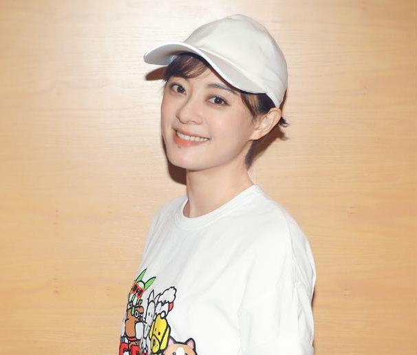

孙俪
基本信息
孙俪，原名孙丽，1982年9月26日出生于上海市，中国内地女演员、歌手。
早年经历
- 1982年9月26日，孙俪出生在上海一个普通的工人家庭 。在其上小学一年级的时候，孙俪母亲发现了她身上的文艺特长，便送她到上海市少年宫（中国福利会少年宫）学习舞蹈.在此期间，孙俪学习认真努力，成绩名列前茅 。
- 1993年，由于舞蹈出众，孙俪随上海东方小伙伴艺术团出访过英国、美国、日本等国家 。
- 1997年，孙俪初中毕业，孙俪母亲为了女儿的前程，便将其送入了中国人民解放军上海警备区战士业余文艺演出队 。在部队期间，孙俪克服了艰苦的军事训练，最终脱颖而出。
- 2000年，孙俪退伍并进入了上海银都艺术学校学习。
主要作品
参演的电视剧
甄嬛传、芈月传、辣妈正传、幸福像花一样、安家、甜蜜蜜等等
参演的电影
我和我的家乡、恶棍天使、大话天仙、画壁、越光宝盒、影、分手大师等等
音乐单曲
| 歌曲名称 |
歌曲简介 |
| 稳稳的幸福 |
2013年与张译合唱 电视剧《辣妈正传》主题曲 |
| 风吹麦浪 |
2013年央视蛇年春节晚会与李健合唱 |
| 慢慢快乐 |
与莫艳琳合唱 原名《慢慢的》,莫艳琳为好友孙俪特别创作 |
| 记忆 |
与方力申合唱 电影《机器侠》片尾曲,含MV |
| 月亮代表我的心 |
2007与邓超合唱 电视剧《甜蜜蜜》片尾曲 |
| 就算没有明天 |
与黄晓明合唱 电视剧《新上海滩》片尾曲 |
| 比我幸福 |
电视剧《玉观音》插曲 |
| 你怎么舍得伤害我 |
公益歌曲,与梁咏琪、许茹芸合唱 |
参演的mv
| 年份 |
歌曲 |
歌手 |
| 2010 |
《香水》 |
何润东 |
| 2008 |
《爱上你的美》 |
羽泉 |
| 2007 |
《爱不离》 |
潘玮柏 |
| 2006 |
《手记》 |
郑智薰 |
| 2011 |
《世界上唯一的花》（中文版） |
SMAP |
生活照

社会活动
慈善事业
- 2005年，孙俪参加《原色·孙俪》云南感恩之旅，出资40万捐建2所“安心希望小学”；上海成龙慈善杯明星赛车第三名
- 2006年，孙俪为公益事业出写真，发行《爱如空气》单曲CD ；5月，担任“天使阳光行动”形象代言人
；9月，应丽江市人民政府的邀请任“丽江城市代言人”；11月，荣获第二届中国（三亚）国际电视广告艺术节最具价值明星诚信奖，并成为“我们的奥运———微笑中国2008”奥运笑脸代言人 。
- 2007年7月25日，代言反皮草，并拍摄一则公益广告；12月1日，出席由搜狐新闻、搜狐公益、中国红十字会总会预防艾滋病工作办公室、美嘉欢乐影城共同发起的“我在新年许下愿望”捐助艾滋孤儿慈善电影专场开幕式 .。
- 2008年，奥运期间参与张一白执导的公益短片《2008分之一》的拍摄；9月26日发布最新公益写真书《带我回家》。
- 2009年，孙俪以“家人”身份出席“壹基金 壹家人”2009年会暨典范工程庆典；11月，与马连奴奥兰迪共同发起拯救中国月熊的行动。
- 2010年，参加反皮草公益宣传“化身天使，拒绝皮草”的公益广告拍摄
；4月，为云南、甘肃等灾区赈灾捐款合计30万元；8月，孙俪“倡导绿色出行”的公益广告海报陆陆续续登陆上海街头，绿色T恤、利落短发，用实际行动热心公益，支持环保。
- 2011年4月，担任亚洲动物基金“拯救黑熊”爱心大使，号召大家拒用一切熊胆制品 。
- 2012年3月，认养唇腭裂弃婴，承担其所有手术和医药费用。
- 2013年1月，探访成都黑熊救助中心几只取胆黑熊，认养其中一只并为其取名萱萱 ；4月，通过壹基金向四川雅安地震灾区捐款。
- 2018年1月31日，《中国慈善家》揭晓了“2017中国慈善名人榜”，孙俪排名第24 。
- 2021年7月，邓超孙俪夫妇为河南暴雨灾情捐款100万元。
形象大使
- 2004年，任上海市小动物保护分会爱心大使 。
- 2006年9月5日，出任丽江市城市形象代言人 。
- 2005年，任健康快车“光明大使” 。
- 2006年，任“金乌炭雕”的环保大使、“感知中国——韩国行”文化交流活动形象大使 。
- 2007年，任搜狐公益大使 。
- 2011年，任亚洲动物基金“拯救黑熊”爱心大使。
- 2016年3月28日，成为上海迪士尼度假区荣誉大使 ；6月15日，受邀参与上海迪士尼开园盛典 。